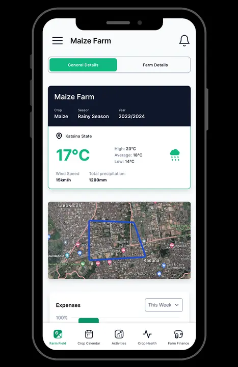
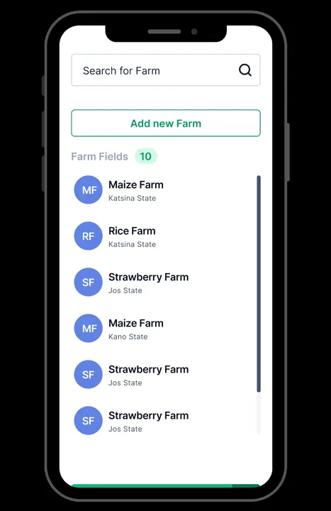
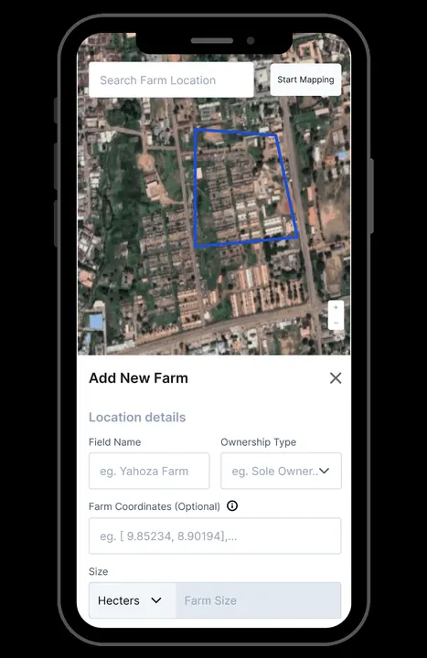
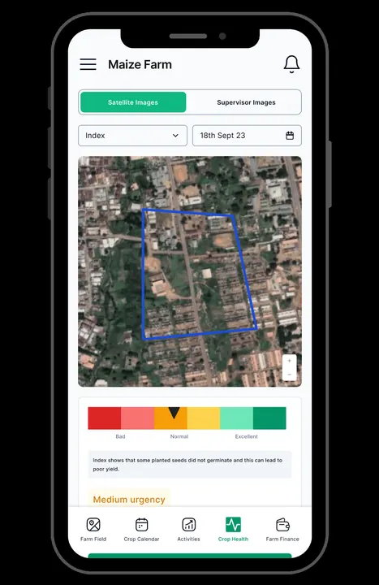
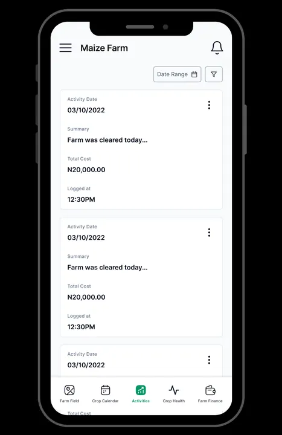

Farm Monitor
Mobile App Developer · 2024
A remote agro project management and monitoring platform built for Africa - real-time farm visibility for farmers, financiers, and stakeholders. I built farmer-side features in the Flutter app.
- Offline-first field data - a sync layer of ~20 dedicated syncers over SQLite records harvests, sales, labour, and logistics without connectivity
- Satellite field mapping with Google Maps and crop-health monitoring dashboards
- Localized in English, Hausa, Igbo, and Yoruba, with face-verification onboarding
1,000+ downloads · 4.3★ on Google Play